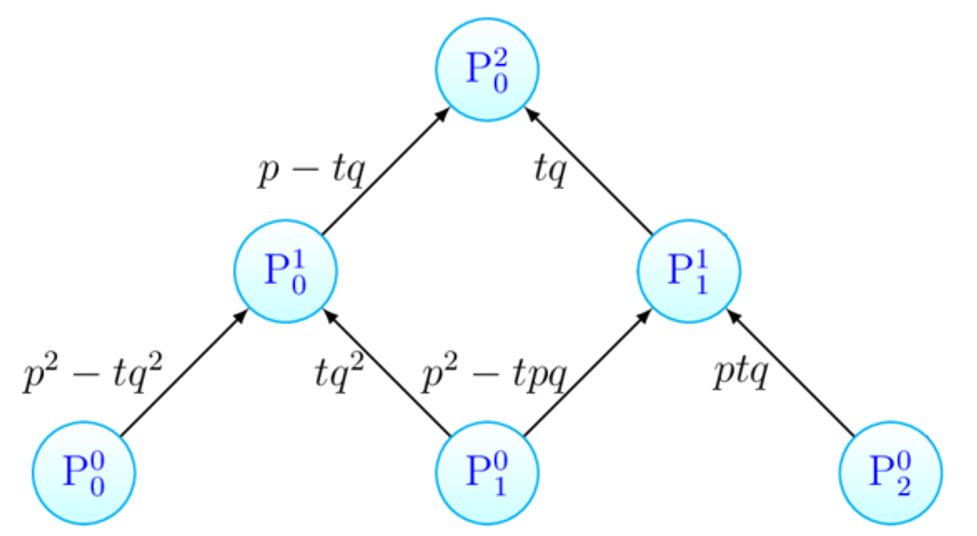
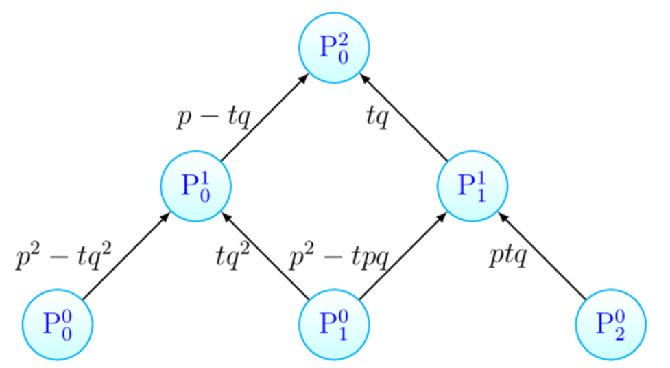

cURVE DI BEZIER
Le curve di Bezier sono curve parametriche ideate dal fisico De Casteljau nel 1959 e largamente utilizzate
dall' ingegnere Pierre Bézier nel 1962 per disegnare le carrozzerie delle automobili.
Sono curve definite nell'intervallo 0,1 dell'asse delle t in cui la cui la funzione P(t), quindi la sua x, y e z sono funzioni polinomiali dello stesso grado k. Ogni curva di Bezier dipende dalla posizione di alcuni punti del piano (per curve piane) o dello spazio (per curve spaziali) che costituiscono il poligono di controllo, il quale non è propriamente un poligono ma un insieme di punti che determinano in maniera univoca la curva. Il numero di punti dipende dal grado k desiderato. Il poligono di controllo, per un curva di grado k, è individuato da k+1 punti.
Per costruire un poligono di controllo bisogna garantire 2 regole:
Mentre le curve di Bezier di grado 1 sono in realtà segmenti orientati, le curve di Bezier di grado 2 vengono anche definite curve quadratiche e sono composte da 3 punti dello spazio affine. Tramite tali punti è possibile costruire la curva utilizzando l'interpolazione lineare, definita dalla seguente funzione:
P(t) = P0 + t(P1 – P0) , 0 < t < 1
Algoritmo di De Castlejau
L'algoritmo di De Casteljau ci permette di definire una curva di Bezier, sviluppando una costruzione attraverso ripetute interpolazioni lineari. Fissato un valore del parametro t ∈ (0,1), fra ogni coppia dei punti di controllo consecutivi viene fatta una interpolazione lineare in funzione del parametro t, ottenendo un nuovo punto della curva.
L'algoritmo viene descritto tramite un diagramma triangolare a 3 livelli.
L'algoritmo di De Casteljau ci permette di ottenere informazioni sulla curva che stiamo costruendo:
Quando t si muove tramite i punti ottenuti, descrive una curva dove nel punto P0
2(t) la retta è tangete al punto.
Si pu scrivere l'espressione analitica della funzione P0
2(t) (cioè la curva di Bezier) in dipendenza semplicemente dalle coordinate di partenza, cioè dai punti del poligono di controllo.
Formula con polinomi di Bernstein
Le curve di Bezier NON sono necessariamente curve regolari.
Il fatto che il supporto delle curve sia contenuto nell'involucro convesso ci dice che le curve di grado 2 hanno in realtà il supporto contenuto in un piano (se P0, P1 e P2 sono in posizione generale). Quindi la torsione è sempre nulla.
Ogni curva di Bezier di grado 2 è in realtà un arco di parabola.
 

- I punti del poligono di controllo devono essere tutti distinti;
- L'ordine di disposizione dei punti del poligono di controllo ha importanza nella costruzione della curva
- Tutti i punti del supporto della curva sono contenuti nel triangolo che è l'involucro convesso determinato dai punti P0, P1 e P2;
- Fissato un rapporto semplice (scegliendo un valore di t tra 0 e 1), i punti ottenuti nei segmenti realizzano lo stesso rapporto semplice.